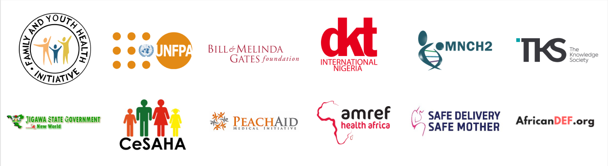

We're Building A World
Where Women Don't Die
Bringing Life.
Welcome to Ending Maternal Mortality
Maternal Mortality is Preventable, but we aren't Preventing it.
EMM is building a scaleable model to distribute life-saving medical solution. We target distribution for pregnant women in remote, rural communities.

We're Tackling Sustainable Development Goal (SDG) 3.1
Made Possible Thanks To:

830 WOMEN DIE DAILY FROM MATERNAL MORTALITY. 20% IN NIGERIA.
POSTPARTUM HEMORRGING (PPH) IS THE #1 CAUSE OF MATERNAL MORTALITY
THE DAILY:
Deaths from PPH
0
Lives Misoprostol Can Save
0
Why is misoprostol not reaching women who need it?
Untrained Birth Attendants
70-75% of pregnant women in Nigeria use unskilled birth attendants. They don't stock misoprostol - and they don't know when to refer women to another facility.
Misoprostol Supplies are Far
Hospitals/pharmacies are located 10s of kilometres away. Villages lack cars and proper road infrastructure. Misoprostol is difficult to access during emergencies.
Supply is Inconsistent/Expensive
Hospitals/pharmacies tend to be understocked. Even if they are stocked, the drugs are too expensive for local women to afford. It's a supply and demand issue.
How can we improve access to misoprostol?
Training Birth Attendants
Most women don't give birth at facilities. They have home births with untrained birth attendants. We'll train them on tackling PPH in low-resource environments.
Bring the Supply to the Villages
Distributing misoprostol at small health centres and local drug stalls.
Reduce costs by 30-80%
Misoprostol prices are unregulated and highly variable. We're purchasing misoprostol in bulk, and selling it as cheap as sustainably possible - at about 0.91 USD.
Our Projects are Changing the Status Quo:
Non-Doctor PPH Training
We are building a pictorial training curriculum to educate any untrained birth attendants. This training covers the basics of PPH. It also introduces misoprostol, the best uterotonic drug for low-resource environments
Misoprostol Pilot in Jigawa, Nigeria
Misoprostol is a uterotonic drug. We are working with FAYOHI, a local nonprofit, and the Jigawa State Government to make misoprostol physically available in villages at an affordable cost.
Posts:
More About EMM:
powered by Typeform